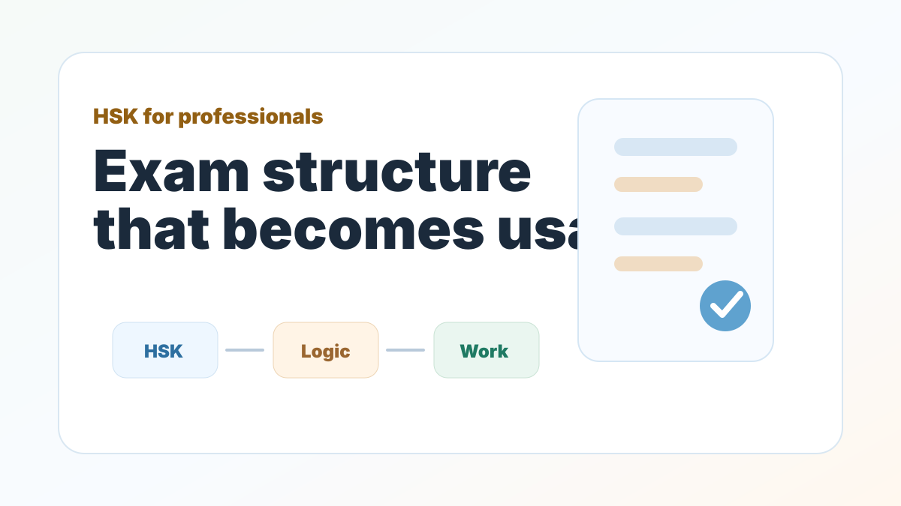

HSK for Professionals
Is HSK Certification Worth It for Corporate Executives and Professionals?
The better question is not whether HSK or practical Chinese matters more. The better question is how to connect them.

Understand when HSK is useful, when it becomes too academic, and how to connect exam preparation with real professional Chinese.
Many adult professionals ask whether they should spend time preparing for the official HSK exam or focus only on business communication. In reality, you should not have to choose.
Traditional language schools often treat HSK preparation as an academic task: vocabulary lists, grammar drills, and practice papers. That can feel low value for busy professionals if it never connects to emails, meetings, negotiations, or real conversations.
1. HSK gives you structural scaffolding
The HSK framework organizes vocabulary and grammar in a progressive way. If you decode the underlying sentence patterns instead of memorizing isolated phrases, HSK becomes a useful map for building more complex Chinese.
2. HSK can signal professional commitment
For professionals working with Chinese colleagues, suppliers, universities, or clients, a recognized Chinese proficiency credential can show seriousness and cultural commitment. It does not replace real communication ability, but it can support credibility.
3. HSK grammar becomes powerful when connected to work
A conditional sentence pattern learned for an exam can also help you discuss contract terms. A comparison pattern can help you evaluate suppliers. A sequence marker can help you explain a project timeline.
如果价格可以再调整一点，我们这周就能确认第一批订单。
If the price can be adjusted a little more, we can confirm the first batch of orders this week.
The Mandrix takeaway
HSK is most useful when it is not separated from real life. Mandrix connects exam structure with practical output, so you build both test readiness and usable Chinese.
Not sure which HSK level fits you?
Start with the free AI level check and receive an initial direction for HSK, daily Chinese, or Business Chinese.